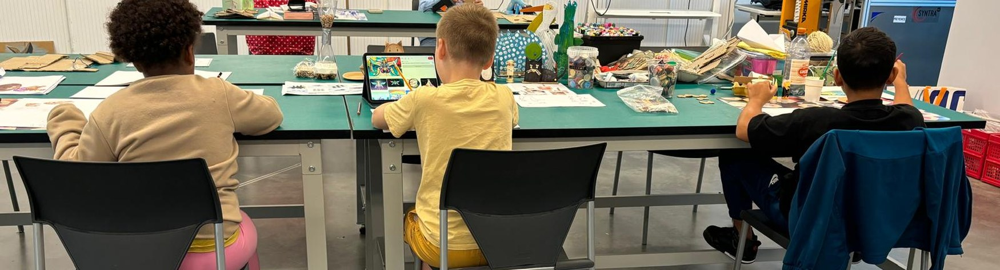

Schrijf je nu in
Plaatsen zijn beperkt. Alle praktische info staat op de website.
info@matmgroep.com
0468 35 74 96
 Inschrijven
Inschrijven

Een kamp voor kinderen van 6 tot 12 jaar die in de vakantie meer willen dan opvang. Nieuwsgierigheid, techniek en uitdaging, in kleine groepen.
Plaatsen zijn beperkt. Alle praktische info staat op de website.
Inschrijven